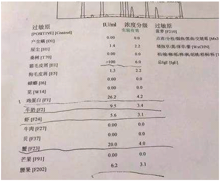
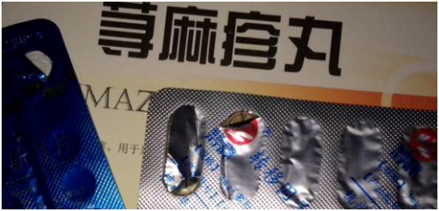

- 2019年10月28日
- 来源： 荨麻疹治疗指南 934715人参与 5719评论
记得去年夏天吧，妈妈在烟台弟弟那里打工，当时是在一家火锅店里，火锅店很火爆天天到饭点忙的不可开交，妈妈本来身体就虚，容易出虚汗，回到家以后就得马上冲澡，洗完澡以后看到身上有一些小红疙瘩，有点痒，摸上去硬硬的，当时也没在意，以为是热的，凉快凉快就下去了。到了晚上吃完饭遛弯回来身上觉得痒的受不了，使劲的用手抓，越是抓就越多，一大片一大片。
没办法，半夜弟弟带妈妈去了附近的医院，奇了怪了，大晚上的医院的人居然还挺多，皮肤科还有排队的，医生说给开了检查单说先去做检查，等了二十多分钟检查了过敏源，好几百块钱，真贵，医生看完检查报告说这是风团，一起一大片，全身都痒，痒起来怎么着都不好使，晚上想睡也睡不着。
医生说这个病只能吃药来控制，追问医生这个病严重吗?能治好吗?医生也没正面回答，就是给开了单子去拿药，嘱咐了几句吃东西要注意，别吃一些海鲜类的，辛辣类的，保持衣物干燥等等。这种情况很可能是因为烟台这边海鲜比较多，老妈来烟台后经常吃海鲜的缘故，海边城市本来就潮湿，再加上天天上班的地方热的出汗，这些都是造成老妈得荨麻疹的原因。后来就去开药，开完药以后弟弟就带妈妈回家了，老妈心想吃完这个药应该差不多就好了，医生也没说别的，应该不严重。回家以后吃了几天药确实有好转，不痒了，也就松懈了，回到正常的生活，上班，下班，吃饭。结果第四天晚上睡觉的时候痒的实在受不了，又睡不着觉了，到处找药，越是着急就越是找不到，烦的不得了，后来没办法就轮番给我妈抓背。
实在没办法，撑到第二天早上，又带我妈来到医院，没做检查给开的药，说回去按时吃药，不要松懈，要坚持吃。回来以后老妈开始按时吃医生开的药，吃着吃着一点都不痒了，而且平时也不敢吃海鲜，辣椒羊肉，老妈以为病好了，就不吃药了，没过多久又开始痒，就这样反复发作，不停的吃药，不停的痒，这一年多来老妈被折磨的都不行了，身上抓的没个好地方。脾气也越来越暴躁，见谁和谁掐，这么大年纪了，天天被这个皮肤病折磨，真的是很愁人。我和弟弟着急在网上找偏方，想办法，痒的实在受不了就用温水擦拭，暂时缓解，到底有没有一种方法可以彻底的去根呢??
弟弟在网上看到一个论坛，上面有一个人用了一种中药膏治好了反复发作的荨麻疹，好像是济南的一个老中医配的中药膏，当时也不知道人家说的是不是真的，也不敢相信，就加了老中医的助理微信，想把老妈的这个情况和人家聊聊，看看能不能治，最主要是能不能去根，不再受这个折磨了。
加上这个助理的微信以后，聊起了老妈的这个病多久了，什么原因，吃过什么药一些问题，后来助理指导说吃东西应该怎么吃，平时多运动出汗以后要及时清理一些注意事项什么的，还说下午的时候可以安排让老妈和专家视频面诊，老妈下午四点下班，下班以后和老专家视频面诊后老专家说老妈这个病挺常见，以及荨麻疹容易发作，而且不容易治愈等等的一些相关知识的介绍，根据老妈这个情况给老妈一开始配了一个疗程的中药膏。
老妈按照医生的指导开始服药，中药膏特殊的药香味老妈也不排斥，十天左右吧，痒感没有那么厉害了，但是根据之前的用药经验来看也不能掉以轻心，因为这个病特别的容易复发。于是又开了一个疗程的药用来巩固治疗，第二个疗程用完药以后问了一下指导医生的意见，把目前的情况说了一下，医生说可以暂停用药了，生活方面，饮食方面再多注意一些，就很好了。
荨麻疹治好后老妈的脾气也好了，又回到了我们从前和蔼可亲的妈妈，最主要的是妈妈不受罪了，作为儿女也是值得欣慰的一件事情。在此非常感谢逯老中医的中药膏治好了老妈顽固的荨麻疹，希望有和老妈这种情况病症的朋友可以对您起到一定的帮助。如果有需要可以咨询专家助理，会给您专业的治疗指导，希望能够帮助到大家。

精彩评论
- 少红 753
我妈也是这个碱胆能荨麻疹病吃了很多药，很受罪！这个药真这么管事么？
今天
作者回复
嗯,调理好的人应该不在少数了。
- 言之有理 786
啊，你用了怎么样啊，我想给我爸买管荨麻疹的，每次看到他挠的那么狠我都看不下去了，作为子女也是很心疼的。对了，有的时候我身上起红疙瘩很痒怎么回事？也是荨麻疹吗？荨麻疹会传染吗？你那里有没有荨麻疹图片，都是什么样的，我这个不会也是荨麻疹吧。
今天
作者回复
我用的感觉挺好的，不过我还是建议你加下老师微信吧，朋友圈有很多图片，并且老师能给你专业的指导。
- 不凡 617
老公荨麻疹想给老公买点药试试，天天晚上都睡不好痒的
今天
- 儿童乐园 564
一周了，医生给开的药，一停就不行，怎么办
今天
作者回复
你加助理医生微信吧，问问
- 珍惜 752
荨麻疹会不会留疤？
今天
作者回复
抓破反复感染会有留下疤痕的可能的，建议早治。
- 雅舍 425
想咨询老中医怎么做
今天
作者回复
你自己加助理微信吧，会安排的
- 人生如戏 633
荨麻疹看上去好吓人啊，我都不敢和我老公太接近
今天
作者回复
你给你老公咨询一下吧，药挺管事，主要是调理去根，二维码就是老师的微信号。
- 烤红薯 587
这药真的管用吗，需要多少钱啊？
今天
作者回复
一人一方，根据病情来的，这个详细你得问助理医生
- 扫 一 扫 二 维 码 加 微 信 免 费 咨 询 荨 麻 疹 问 题